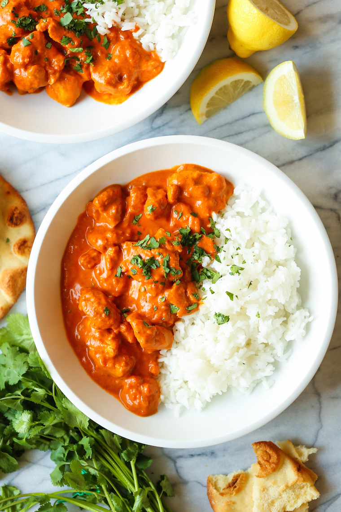

Chicken Tikka Masala

Description
This creamy chicken tikka masala is promised to please even the most abnoxious aficionado's!
Ingredients
- 1 1/2 Tbsp canola oil
- 1 1/2 pounds boneless, skineless chicken thighs, cut into 1-inch chunks
- Kosher salt and freshly ground black pepper, to taste
- 1/2 medium sweet onion, diced
- 3 Tbsp tomato paste
- 3 cloves garlic, minced
- 1 Tbsp freshly grated ginger
- 1 1/2 teaspoons garam masala
- 1 1/2 teaspoons chili powder
- 15 ounce can of tomato sauce
- 1 cup chicken stock
- 1/2 cup of heavy cream
- 2 Tbsp chopped fresh cilantro leaves
Steps
- In a large saucepan of 2 cups water, cook rice according to package instructions; set aside.
- Heat canola oil in a large stockpot or Dutch oven over medium heat. Season chicken with salt and pepper, to
taste. Add chicken and onion to the stockpot and cook until golden, about 4-5 minutes.
- Stir in tomato paste, garlic, ginger, garam masala, chili powder and turmeric until fragrant, about 1
minute.
- Stir in tomato sauce and chicken stock; season with salt and pepper, to taste. Bring to a boil; reduce heat
and simmer, stirring occasionally, until reduced and slightly thickened, about 10 minutes.
- Stir in heavy cream until heated through, about 1 minute.
- Serve immediately with rice, garnished with cilantro, if desired.